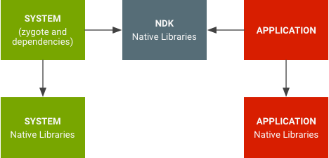

Android 7.0 introduced namespaces for native libraries to limit internal API visibility and resolve situations when apps accidentally end up using platform libraries instead of their own. See the Improving Stability with Private C/C++ Symbol Restrictions in Android 7.0 Android Developers blog post for application-specific changes.
The change separates system libraries from application libraries and makes it hard to use internal system libraries by accident (and vice versa).
Figure 1. Namespaces for native libraries
Namespaces for native libraries prevent apps from using private-platform native
APIs (as was done with OpenSSL). It also removes situations where apps
accidentally end up using platform libraries instead of their own (as witnessed
with libpng).
In addition to standard public native libraries, vendors may choose to provide
additional native libraries accessible to apps by putting them under the
/vendor library folder (/vendor/lib for 32 bit libraries and,
/vendor/lib64 for 64 bit) and listing them in:
/vendor/etc/public.libraries.txt
This feature is enabled only for applications targeting SDK version 24 or later; for backward compatibility, see Table 1. What to expect if your app is linking against private native libraries. The list of Android native libraries accessible to apps (also know as public native libraries) is listed in CDD section 3.1.1. Apps targeting 24 or later and using any non-public libraries should be updated. Please see NDK Apps Linking to Platform Libraries for more details.